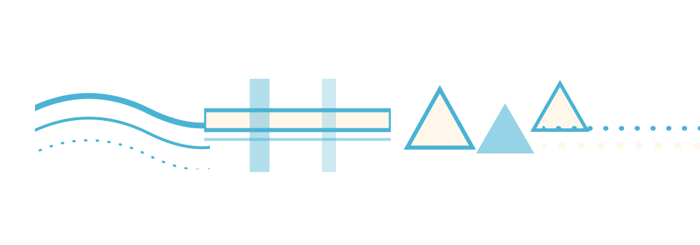

Galaxy Depth Artwork Draft 4
Past recognizable objects: plaid washes, repeated curves, dotted line residues, triangle shards, cyan and cream signal marks.



Past recognizable objects: plaid washes, repeated curves, dotted line residues, triangle shards, cyan and cream signal marks.
